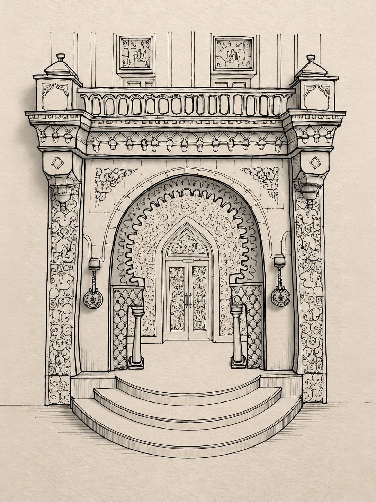
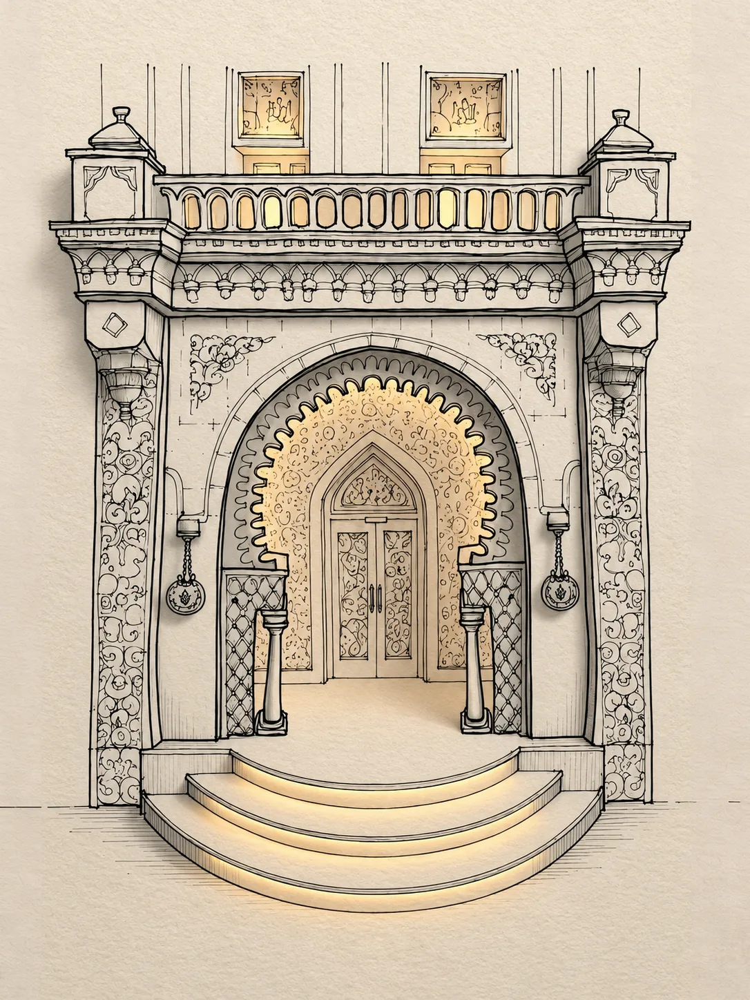
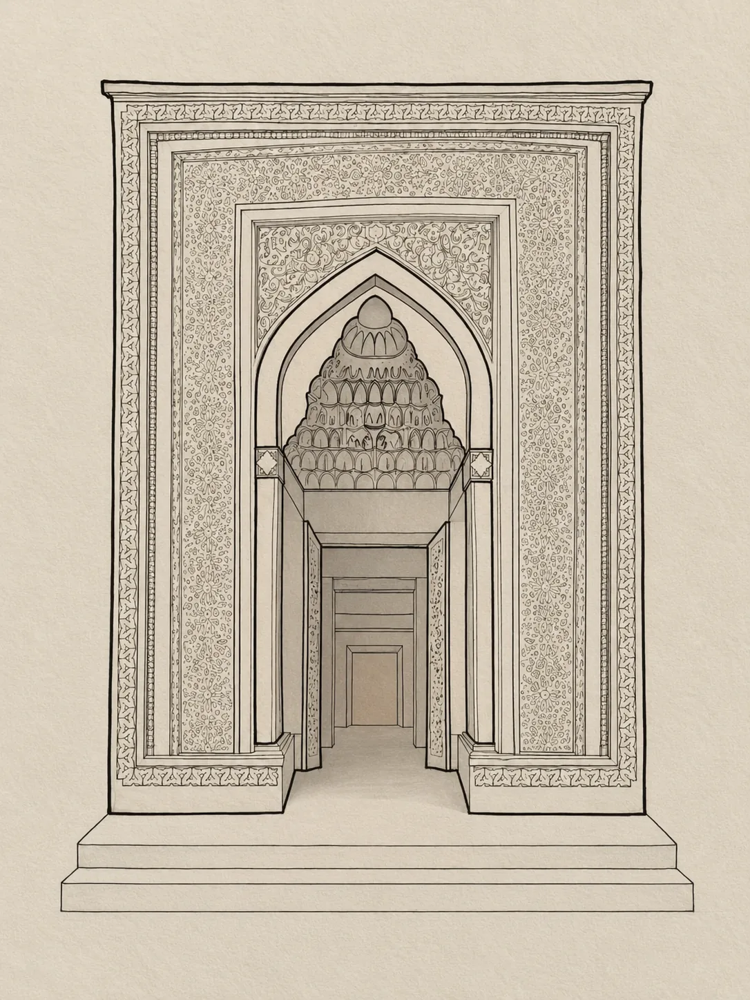
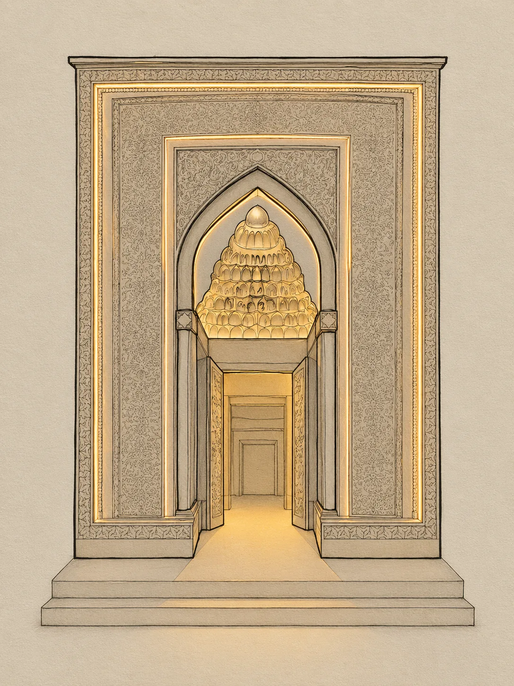
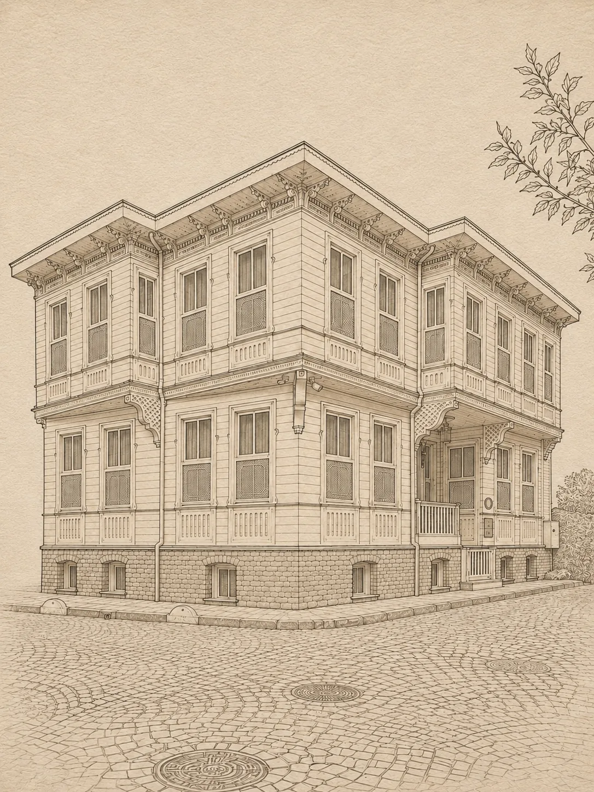
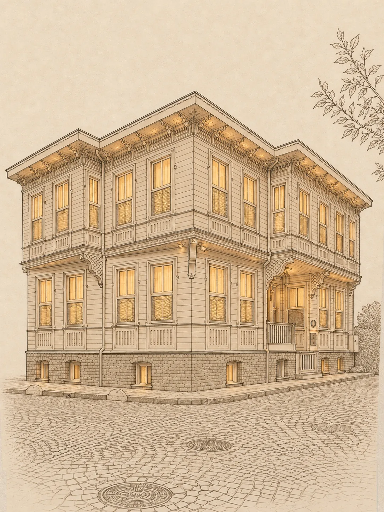

Plate I · Historic Istanbul AJWA Sultanahmet In the heart of the old city, steps from Hagia Sophia and the Blue Mosque. Discover →

Plate II · Cappadocia AJWA Cappadocia Hand-carved cave suites above the fairy chimneys. Discover →

Plate III · Serviced Residences AJWA Homes Spacious residences with the service of AJWA Sultanahmet. Discover →